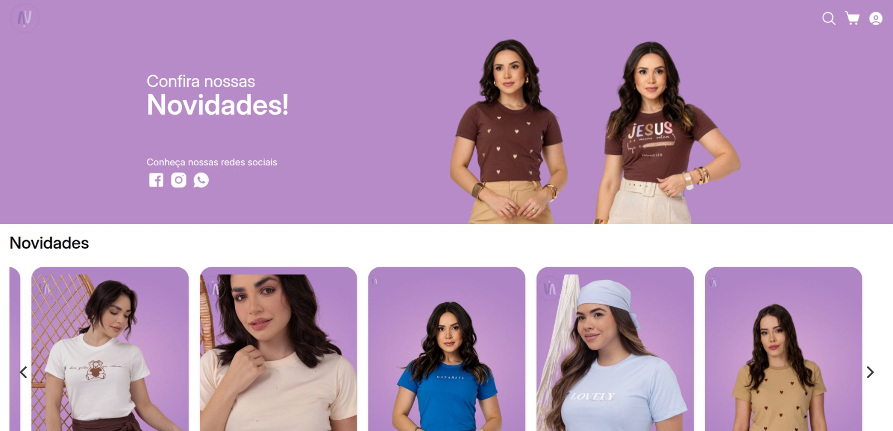
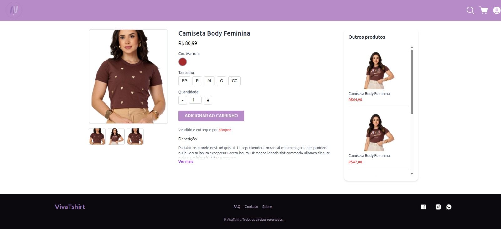
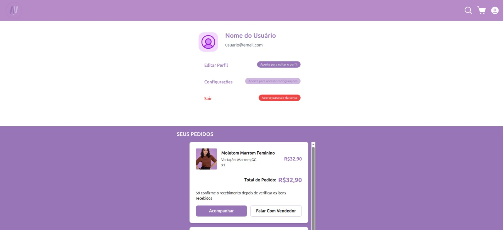

Plataforma de E-commerce de Vestuário
A VivaTShirt é uma plataforma de e-commerce especializada no setor de vestuário, desenvolvida com o objetivo de oferecer uma solução completa para gerenciamento de vendas online.
O sistema permite o controle de estoque, pedidos e clientes de forma centralizada, além de contar com integração com a API da Shopee, ampliando a visibilidade dos produtos e facilitando a sincronização com marketplaces.
A aplicação une a autonomia de uma loja própria com o alcance de grandes plataformas, proporcionando um fluxo de vendas mais eficiente e moderno.
Tecnologias utilizadas: Node.js, HTML5, CSS3 (Tailwind) e MySQL
Acesse o código do projeto no GitHub:
Fui responsável pelo desenvolvimento do banco de dados e pela documentação do projeto, garantindo a estruturação das informações e a organização das entidades do sistema.
Também atuei na definição da arquitetura da aplicação, colaborando com a equipe no desenvolvimento backend e na integração com serviços externos.
O projeto foi desenvolvido em equipe, onde backend, frontend e design foram divididos para otimizar o desenvolvimento e garantir uma solução completa.


